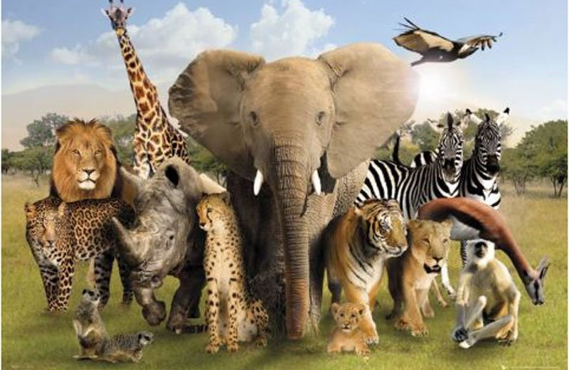

São aqueles que vivem livremente na natureza, sem domesticação ou controle humano. Eles se adaptaram ao seu ambiente e seguem seus instintos naturais para sobreviver, como caçar, forragear e se reproduzir. Exemplos incluem leões, tigres, elefantes, aves e muitos outros. Esses animais desempenham papéis importantes nos ecossistemas, ajudando a manter o equilíbrio ambiental.

Características dos Animais Selvagens
Instintos Naturais: Seguem instintos de caça, forrageamento e reprodução.
Adaptabilidade: Adaptam-se a diferentes habitats, como florestas, savanas, desertos e oceanos.
Autonomia: Vivem de forma independente, sem depender da intervenção humana.
Habilidades de Caça: Possuem características físicas que os ajudam a caçar ou se proteger.
Comportamento Social: Alguns vivem em grupos sociais, enquanto outros tendem a ser solitários.
Ciclos Naturais: Estão em sintonia com os ciclos naturais, como as mudanças de estação.
Diversidade de Espécies: Uma ampla variedade de espécies, cada uma com adaptações específicas.
São aqueles que foram domesticados pelo ser humano ao longo do tempo para viver em ambientes controlados, como casas ou fazendas. Eles dependem dos humanos para alimentação, abrigo e cuidados. Exemplos comuns incluem cães, gatos, vacas, ovelhas e galinhas. Esses animais desenvolvem comportamentos sociáveis e são utilizados para várias finalidades, como companhia, trabalho e produção de alimentos.
Características dos Animais Domésticos
Dependência do Ser Humano: Precisam de alimentação, abrigo e cuidados.
Temperamento Sociável: Geralmente têm um comportamento mais dócil e amigável.
Adaptação ao Ambiente Doméstico: Estão adaptados a viver em ambientes controlados.
Variedade de Raças: Muitas espécies têm várias raças com características específicas.
Funções Diversificadas: Servem a diferentes propósitos, como companhia e produção de alimentos.
Menor Instinto de Sobrevivência: Instintos de sobrevivência menos desenvolvidos.
Reprodução Controlada: A reprodução é frequentemente controlada pelos humanos.
Tipos de Animais Domésticos
Cães: Usados como animais de companhia, de trabalho e de guarda.
Gatos: Independentes e têm habilidades de caça.
Aves: Criadas para a produção de ovos e carne.
Répteis: Algumas espécies, como tartarugas e lagartos.
Mamíferos Pequenos: Coelhos e porquinhos-da-índia.
Animais de Fazenda: Vacas, ovelhas e porcos.
Equinos: Cavalos e jumentos.
Esses animais desempenham diversos papéis na vida humana, variando de companhia a produção de alimentos e serviços.